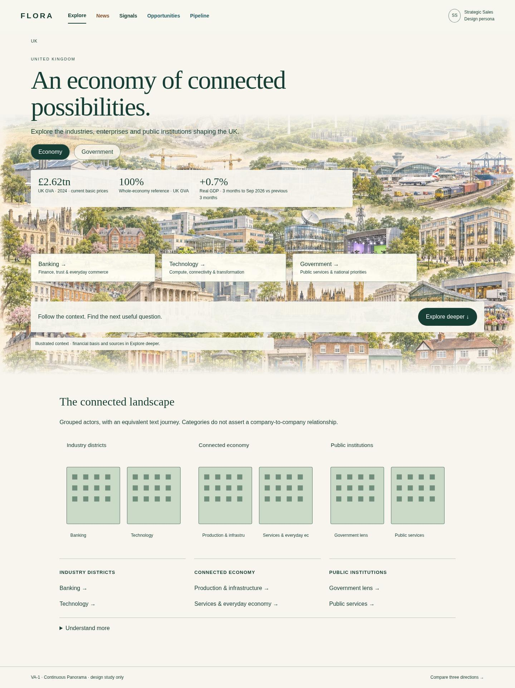
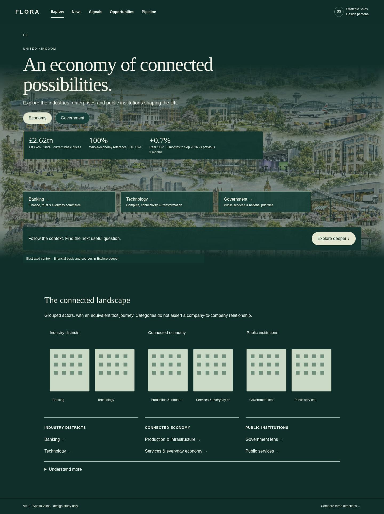
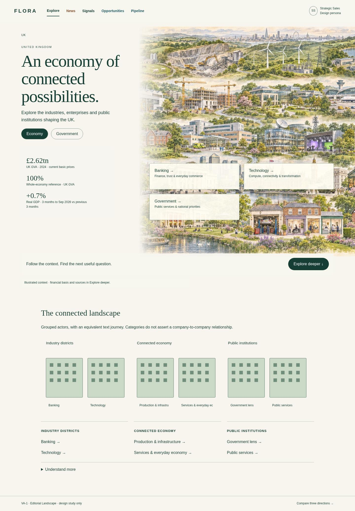

Original concepts not accepted. Review the bounded simplicity correction and comparisons · Open the simplified study
FLORA / Visual Atlas VA-1 / Owner design review
One world.
Three ways to explore.
Static design studies. No product functionality, private records or live metrics.

Continuous Panorama
Warm, expansive and familiar. Recommended.
United Kingdom →UK Banking →UK Technology →Lloyds Banking Group →NVIDIA →UK Government →
Spatial Atlas
Immersive forest-toned world; strongest separation of layers.
United Kingdom →UK Banking →UK Technology →Lloyds Banking Group →NVIDIA →UK Government →
Editorial Landscape
Quiet typography and stable reading rail; stronger content hierarchy.
United Kingdom →UK Banking →UK Technology →Lloyds Banking Group →NVIDIA →UK Government →Choose a direction first. Metric reconciliation, Newsroom and live ecosystem implementation remain #607, #606 and #608 respectively.